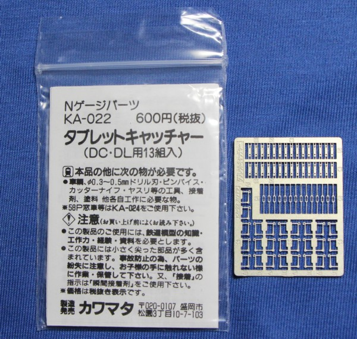
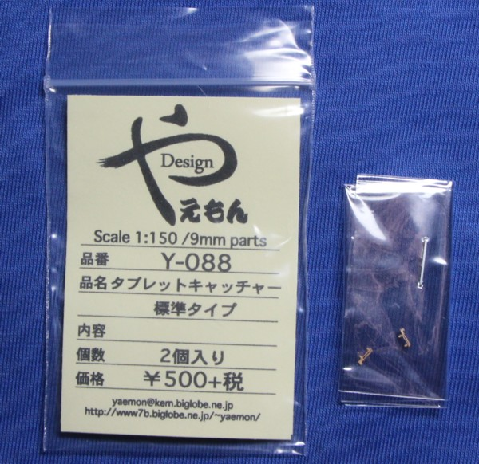
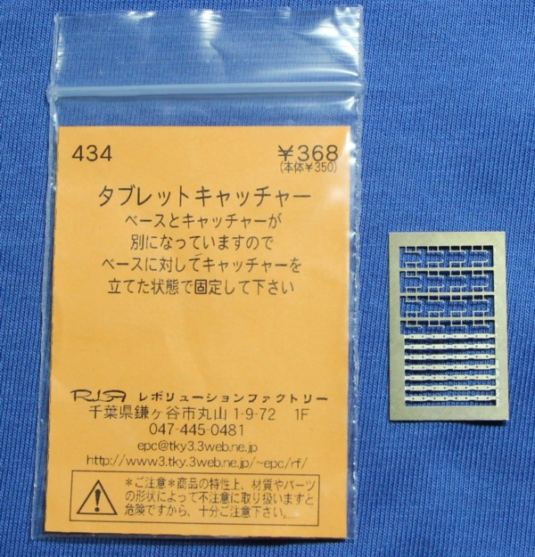

急行「砂丘」でタブレットキャッチャーがタブレットをキャッチしたところです。 駅はどこだったか覚えてないのですが、これ、美作河合ですかね。 「砂丘」は、鳥取鉄道部と津山鉄道部が受け持っており、津山の方はタブレットキャッチャー使用、鳥取は使わずに手で取っていました。
右に流れていくのがホームに設置される授け器。 すでに更新されており、白色ではなく亜鉛の無塗装のものになっていました。
美作河合駅場内信号機。 場内進行・通過進行です。
|  | ピース構成の洋白エッチングです。 約13両分で500円。丁寧なイラスト入り説明書付きで、読んでいて楽しいです。 DD51/DE10などのDL用の補強付きの台座も入っています。 |
|  |
蒸気機関車用?のロストワックス製。 1両分、2個で500円。 一体成型なので、そのまま取り付けることができます。 すごいお値段ですが、お値段ならではの精密感。 |
|  |
洋白エッチングの2ピース構成。
14両分で350円です。 2ピース構成で、アームの受けが省略されていますが、その分車体に密着するので カワマタ製と比べると出っ張りがちょうどいい感じになりそうです。 私は、実はまだ使ったことがありません…。 |